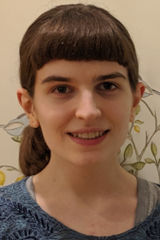

|  |
I am a research assistant at the MIT Computational Cognitive Science lab, led by Prof. Joshua Tenenbaum. I graduated from MIT with a B.Sc. in Brain and Cognitive Sciences and Mathematics in 2019. I am mainly interested in understanding vision. Specifically, I am interested in computationally modeling the human visual system (from a cognitive science perspective), and in developing new computer vision algorithms (from an artificial intelligence perspective). I am particularly interested in the capacity of human vision to reconstruct 3D representations from 2D input. I beliveve that analysis-by-synthesis (i.e. inverse graphics) is an appealing framework for understanding 3D vision. |
Building 3D Morphable Models from a Single Scan
Sutherland, Skylar; Egger, Bernhard; Tenenbaum, Joshua
In submission.
[preprint (pdf)] [code]
Learning a Generative Model of Human Faces Through Inverse Rendering
Sutherland, Skylar; Egger, Bernhard; Tenenbaum, Joshua
Poster presented at the 42nd Annual Virtual Meeting of the Cognitive Science Society (CogSci), Aug. 1, 2020.
[pdf] [abstract (in proceedings)]